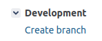
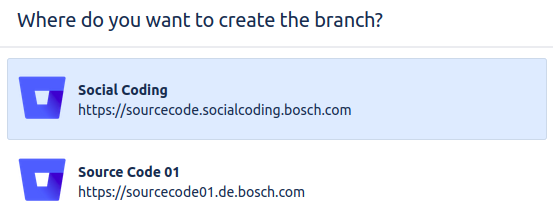
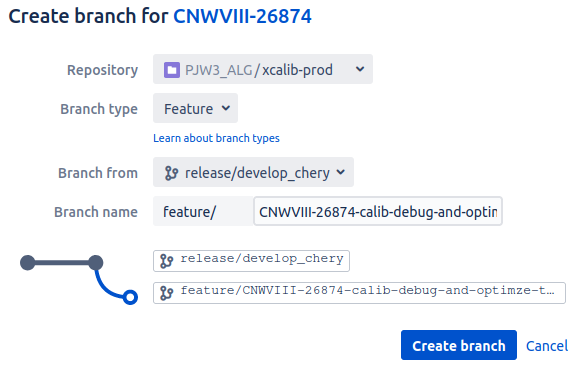
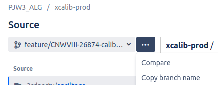
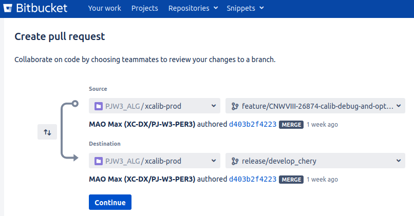
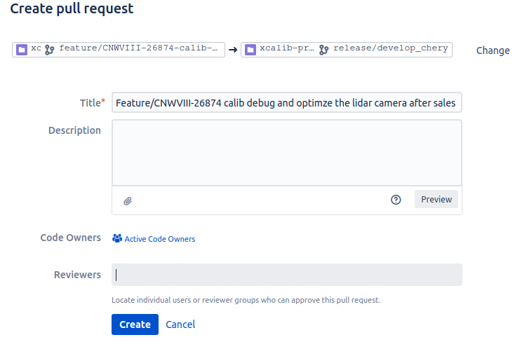

Mass production calibration Code Specification
Code warehouse
|
project name |
bitbucket link |
daily-build branch |
description |
|
xcalib-prod |
https://sourcecode01.de.bosch.com/projects/PJW3_ALG/repos/xcalib-prod/browse |
release/develop_chery |
Production line/after -sales/online calibration algorithm |
|
Calibration |
https://sourcecode01.de.bosch.com/projects/PJW3/repos/calibration/browse |
release/develop_chery |
Production line/after -sales/online calibration integrated |
|
pub_calib |
https://sourcecode01.de.bosch.com/projects/PJW3/repos/w3-up1-pub-interface/browse/pub_calib |
develop_chery |
Production line/after -sales/online calibration interface |
Conjunction rules
1. Cut out of the branch of the calibration algorithm: Develop_chery → Feature* → Develop_chery
2. Rebase is strictly prohibited to avoid omissions and effectively cooperate
3. You must take PR, and it is strictly forbidden to directly push to daily-build braanch. You can only be merge after Build and Review
4. Before COMMIT, it must be based on the latest Xcalib-PROD, PUB_CALIB, and Calibration (ROOT Warehouse) verification and compilation
5, important version to release tag (such as the full link of the production line joint)
6. Renew the connection of the connection (XCALIB-PROD) in the conanfile.py in Calibration.
7. Reasonable use of log tag log_info/error/vital ...
8. Clean up in time to keep the code warehouse neatly clean (the figure below is the current state, please test the relevant development in a timely manner, and clean it up after entering)
PR pipeline
1. Build a new feature branch in Jira (click-Source Code 01)




2. Pull the Feature branch and do it Jira related code development and submission (format must conform to the "TR + description of this submission")
git checkout feature/CNWVIII-26874-calib-debug-and-optimze-the-lidar-camera-after-sales-calibration-algorithm
git commit -m "CNWVIII-26874 new demo_lidar_camera_aftersales_calib.cpp"
3. After confirming that the compilation is passed, the application is completed (note: if the XCALIB-PROD warehouse modification may affect the compile of the Calibration warehouse, be sure to verify), add the design and reviewer
 